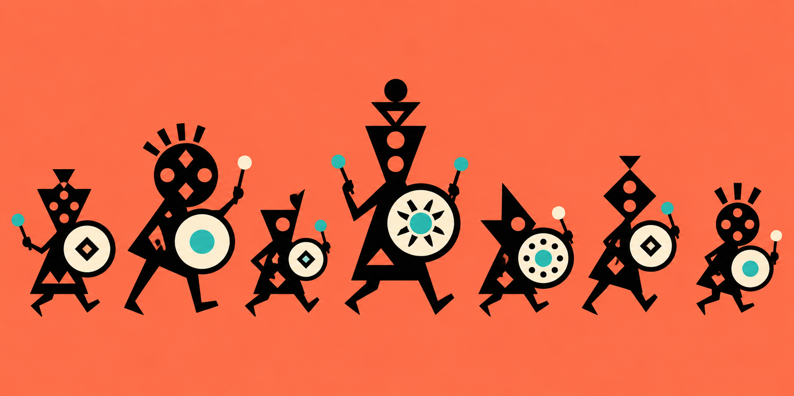

01 · FORMATION
RHYTHM FORMATION · SPECIMENS
Drumbeat Muster
Original symbolic controls; fragments only, not a full screen.

02 · EXPEDITION
Route beat
●
Reedstone Pass
MEDIUM DANGER · COST: 2 RATIONS
03 · COMMAND
Beat glyph
PONPATAPONCHAKA
Beat 2 of 4 · press the pata command
Ready window · no result yet.